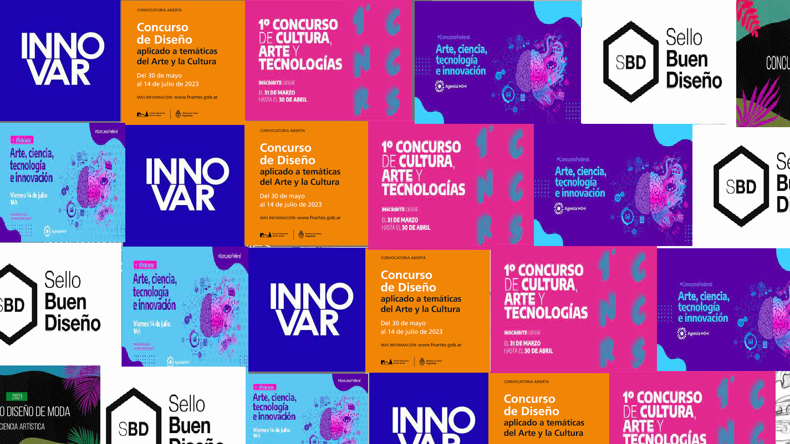

¿En qué consiste este modelo?
La incubadora de concursos brinda asesoramiento y acompañamiento integral para la presentación de proyectos en concursos de diseño, innovación, desarrollo o emprendimiento.
Está dirigida a estudiantes, egresados, emprendedores o equipos de trabajo que cuenten con una propuesta destacada, ya sea en fase de desarrollo o completamente formulada, con potencial para presentarse en certámenes de alcance nacional o internacional.
A través de este modelo, se promueve la representación de la UNLa o de entidades auspiciantes, fortaleciendo la proyección pública de proyectos innovadores, sustentables y con impacto territorial.
¿Qué incluye el acompañamiento?
- Análisis del concurso y sus requisitos.
- Revisión del proyecto y sugerencias de mejora.
- Asesoramiento en presentación visual y técnica.
- Redacción de carpetas, textos y pitch de presentación.
- Gestión de inscripción y vinculación institucional.
¿A quién está dirigido?
Este modelo es ideal para personas o equipos con un proyecto en desarrollo que deseen darle visibilidad, validación y alcance competitivo. También es una oportunidad para representar a la UNLa en contextos profesionales y académicos de alto nivel.
